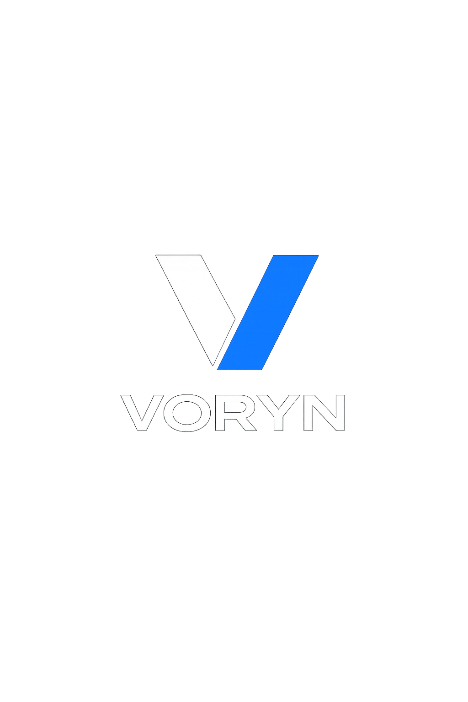

Sobre a VORYN

A VORYN é uma marca dedicada ao desenvolvimento de soluções digitais, produtos e projetos que unem tecnologia, inovação e empreendedorismo. Nosso propósito é transformar ideias em oportunidades e oportunidades em resultados, criando impacto positivo por meio da criatividade e da tecnologia.
O Significado da VORYN
A marca VORYN representa visão, oportunidade, resultados e evolução contínua.
Missão
Transformar ideias em oportunidades e oportunidades em resultados por meio da tecnologia, educação e inovação.
Visão
Construir um ecossistema de negócios digitais reconhecido pela inovação, qualidade e capacidade de transformar ideias em resultados.
Valores
Inovação, qualidade, transparência, aprendizado contínuo, responsabilidade, evolução e compromisso com resultados.
Objetivo
Criar e expandir marcas, produtos e projetos digitais que conectem tecnologia, educação, inovação e empreendedorismo.
Slogan Oficial
Vision Creates Opportunity.
Opportunity Drives Results.
Results Define Your Next Level.
A visão cria oportunidades.
As oportunidades geram resultados.
Os resultados definem seu próximo nível.